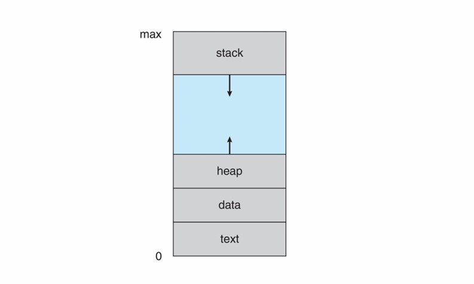
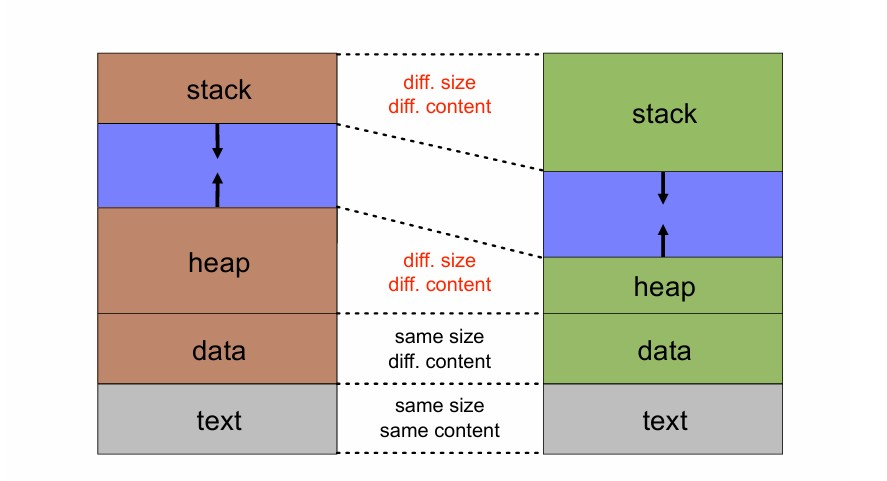
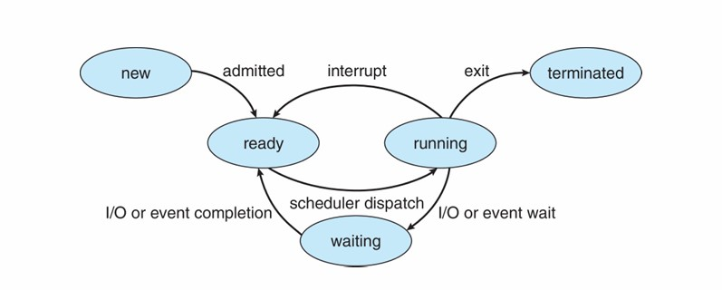
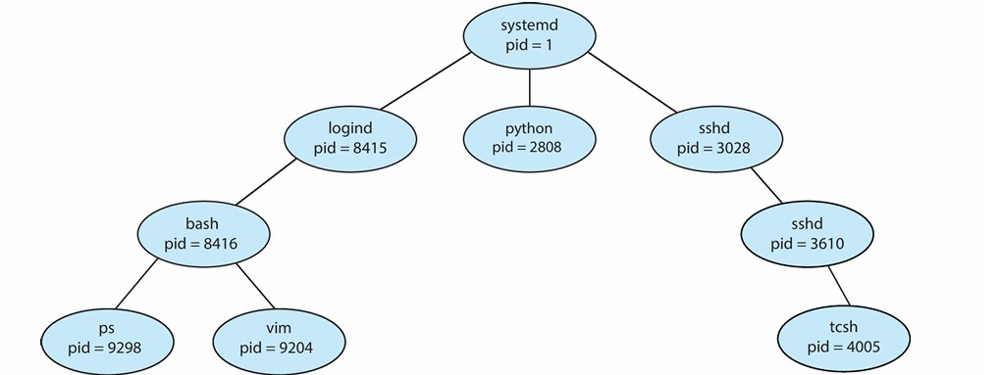
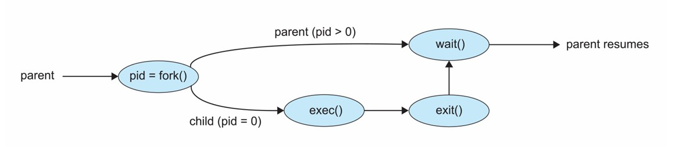
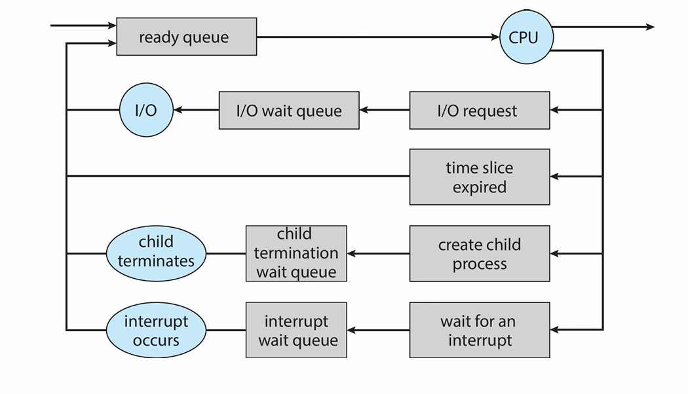
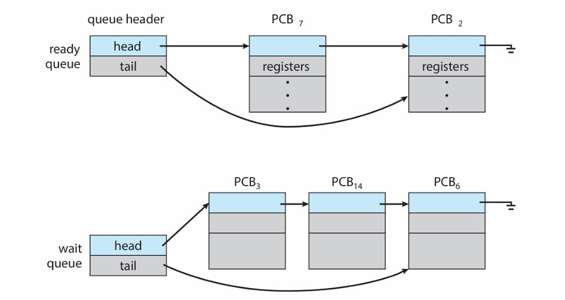
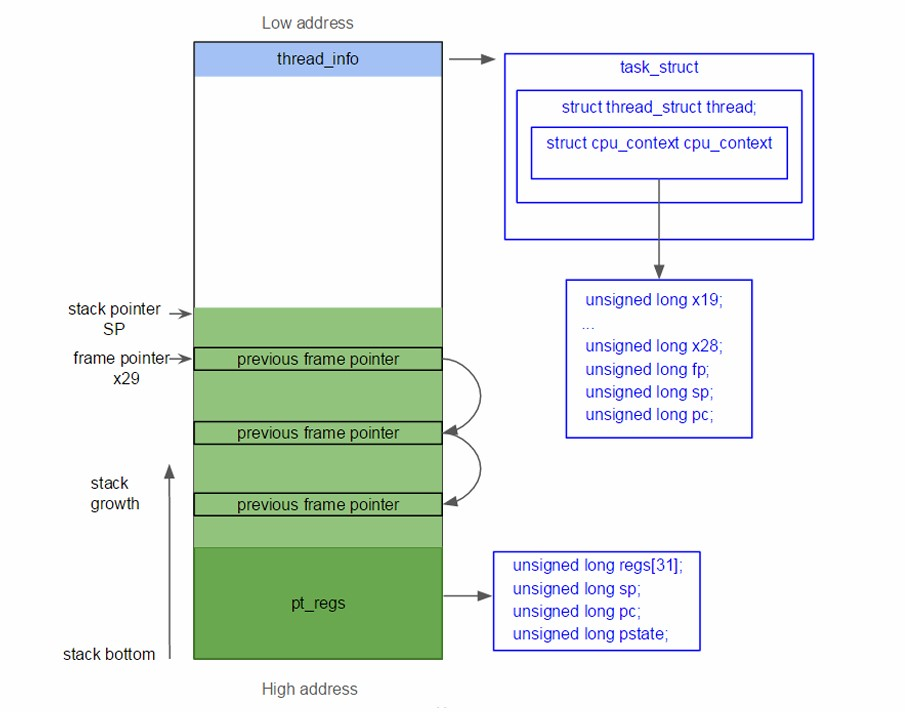
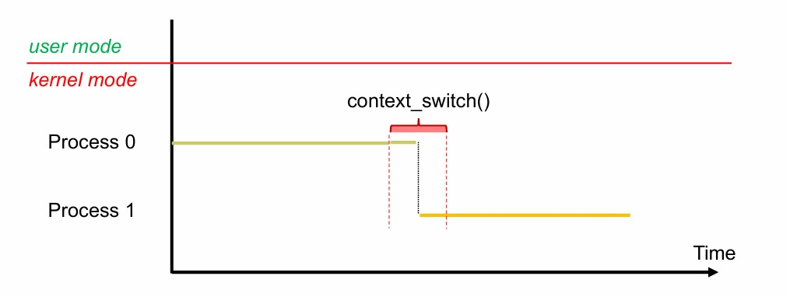
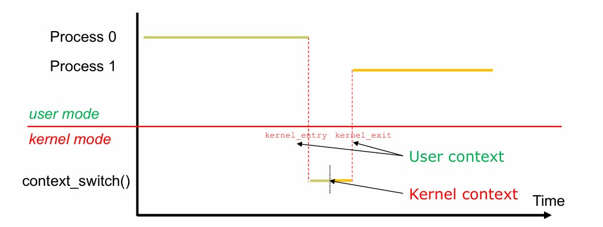

Chapter9 Processes
9.1 Process Concept 进程的概念
resource allocation and protection 资源的分配与保护单元
进程是一个执行中的程序，一个未执行的程序仅仅是硬盘上的ELF，ELF载入内存后就变成了进程。
同一个程序可以对应多个进程。例如，在一个共享服务器上，每个用户可以启动相同程序的一个实例（如文本编辑器、Shell等）。
一个运行的系统包含多个进程，比如OS进程和user进程等。
进程包含的内容：
- code（text）section：代码内容
- data section：全局变量，包括
.bss段和.data段的内容 - program counter（pc）：指向下一条待执行的指令
- stack：与函数调用相关
- heap：与动态分配内存相关
- PCB：进程控制块，包含进程信息

上图为user space的进程的内存布局。
stack 运行时栈：
与函数/方法调用相关，调用时会长，返回时会缩，其对应的内存空间称为stack frame 栈帧，保存于调用相关的信息，如返回地址、局部变量等，完全由编译器进行管理。
Note
栈帧又称activation records。
对于一个被调用的函数，其需要：
- caller传递的参数
- 局部变量
- 返回地址
- 返回值
在调用之前，caller也需要保存寄存器的相关状态。
运行时栈是从高往低处（从高地址往低地址）长的，如果长得过多（递归）会导致stack overflow，会和heap冲突（静态）或者和lib冲突（动态）。
heap 运行时堆：
运行时堆在栈之后发明，弥补了栈没有办法长期维持一块内存的问题。大块内存（动态分配）在堆上，有自己的生命周期。
如果没有及时释放堆的内存，则会导致memory leak，而栈一般不会。
同一程序的两个进程比较：
两个对应程序一样且同时的进程，text段和data段的大小一样（ELF映射），text段的内容一样，但data段的内容可能不一样，因为global valuable可变。栈和堆的大小和内容都不一样。

9.2 Process Control Block(PCB) 进程控制块
PCB本质上是内存的一块内容，存放对应进程的信息，一个进程只有一个PCB，在进程创建时分配，在进程结束时释放。
PCB存放的信息：
- 进程号PID：唯一标识进程
- 进程状态：running、waiting等
- PC：下一条待执行指令的地址
- CPU寄存器：与该进程相关的寄存器的内容
- CPU调度信息：如优先级、调度队列指针等
- 内存管理信息：如分配给该进程的内存区域等
- 计数信息：如CPU占用情况，耗时，时间限制等
- I/O信息：如分配给该进程的I/O设备，待打开文件等
Note
在Linux中PCB用C语言表示为task_struct。
pid t_pid; /* process identifier */
long state; /* state of the process */
unsigned int time_slice /* scheduling information */
struct task_struct *parent; /* this process’s parent */
struct list_head children; /* this process’s children */
struct files_struct *files; /* list of open files */
struct mm_struct *mm; /* address space of this process */
9.3 Process State 进程的状态

- New： 进程被创建
- Running： 进程的指令在执行
- Waiting： 进程在等待事件发生
- Ready： 进程在等待被分配给处理器
- Terminated： 进程结束
New：Process Creation

一个进程能创建新的进程，此时前者为parent，后者为child，child的ppid指的是其parent的pid。
child可能会从其parent处继承一些信息，可能是parent的复制，也可能全新。
parent能向child传递参数。创建child后，parent可以继续执行，也可以等待child执行。
Note
Linux的一号进程是systemd（很多进程的parent），二号进程是kernelthread，他们的parent都是零号进程，零号进程是swapper（IDLE）（系统启动的最初进程）。
folk系统调用：
folk系统调用用于创建一个新的进程，创建的child是parent的复制，接下来会和parent从同一位置一起执行（folk系统调用的下一句），但pid和ppid不同，resource utilization（资源利用率）初始化为0。
folk会返回两个不同的值，给parent返回child的pid，给child返回0。每个进程可以调用getpid()得到自己的pid，调用getppid()得到自己的ppid。
所有进程系统调用folk后，依然会继续执行。
pid = fork();
if (pid < 0) {
fprintf(stdout, "Error: can’t fork()\n");
perror(“fork()”);
}
if (pid != 0) {
fprintf(stdout, "I am parent and my child has pid %d\n",pid);
while (1);
} else {
}
fprintf(stdout, "I am child, and my pid is %d\n", getpid());
while (1) ;
Example
例1：下列代码最后会输出多少？child的a最后为多少？
int a = 12;
pid = fork();
if (pid) { // PARENT
// ask the OS to put me in waiting
sleep(10);
fprintf(stdout,”a = %d\n”,a);
while (1);
} else { // CHILD
a += 3;
while (1);
}
解：12；15
Example
例2：下列代码最后会打印多少次“hello”？
pid1 = fork();
printf("hello\n");
pid2 = fork();
printf("hello\n");
解：6
第一个进程在第1行创建第二个进程，这两个进程各自打印2次；这两个进程在第3行各自创建第三个进程和第四个进程，这两个进程各自打印1次。
Example
例3：下列代码最后会形成多少个进程？
int main (int argc, char *arg[])
{
fork ();
if (fork ())
{
fork ();
}
fork ();
}
解：12

folk得到的进程是一模一样的，看似没用，需要exec 系统调用用在folk之后才有用。
exec系统调用：
exec系统调用将当前进程的内存空间替换为新的内容。
只有出现错误，exec才会有返回值。
Note
exec实际上是一个系列，包括execl， execle，execlp，execv，execve和execvp，可以指定可执行文件路径、命令行参数、环境变量等。

如果在一个进程中先系统调用 exec，再调用print函数，print函数不会被执行，也不会输出任何内容。
原因是：当exec系统调用成功时，它会用新程序的映像完全替换当前进程的映像。这意味着，之后的代码将不会被执行，因为当前进程已经被新程序取代了。execv只有在执行失败时才会返回，而在这种情况下，后续的代码才会被执行。
fork+exec进程创建的优劣：
优点：
- 简洁
- 分工明确：
folk搭起骨架，exec赋予灵魂 - 保持进程之间的联系
缺点：
- 复杂：涉及两个系统调用
- 性能差
- 安全性问题
Terminated：Process Terminations
exit系统调用：
exit系统调用用于终止所在进程，其输入为一个exit code，OS负责释放该进程的所有资源（物理/虚拟内存、I/O buffer，open files等）
Definition
exit code 退出码：
常规情况：exit(0)
出现错误：exit(i)（i非零）
其既可以作为输入，也可以作为输出返回给parent。
wait和waitpid系统调用：
wait系统调用被parent使用，等待其任意一个child结束，返回值为结束的child的pid和exit code。
waitpid系统调用等待特定的child结束（以child的pid作为输入），其还有一个参数输入叫作status，如果status为WNOHANG，则如果pid指定的child没有结束，则返回0；否则则返回child的pid。（non-blocking）
Signal：
signal是来自软件的中断，发送给进程，属于进程在某种程度上不得不响应的异步事件。
signal可以用于处理进程同步。
Example
- ^C会向运行的命令发送
SIGNTsignal - 段错误会向运行的进程发送
SIGBUSsignal - 一个进程会向另一个进程发送
SIGKILLsignal
每一种signal都会导致进程的对应默认行为，例如，SIGINTsignal会导致进程终止。
对于大多数signal，可以忽略或者通过用户指明的handler来处理，但像SIGKILL和SIGSTOP一类的signal无法被user忽略或者处理（出于安全考虑）。
signal系统调用允许进程指明如何处理signal，例如：
signal(SIGINT,SIG_IGN)：忽略SIGINTsignal(SIGINT,SIG_DFL)：为SIGINT设置默认处理方式signal(SIGINT,my_handler)：将SIGINT交给自定义的handler处理
Zombie进程：
如果一个child进程已经结束，并不占用CPU，但没有释放掉资源（如.text、.data、PCB等），则变为zombie。
如果zombie越来越多，则会耗尽内存，导致folk失败。因此，zombie需要parent帮忙释放（例如系统调用wait获取exit code，或者使用handler）。
只有zombie的parent调用wait或者parent没了，zombie才能消失。当child退出时，其parent会接收到SIGCHLDsignal。
典型处理方法：
- parent将
SIGCHLDsignal连接到一个handler - handler调用
wait - 等待识别所有child的终止
Orphan进程：
如果一个child进程的parent没了，则这个child变为orphan。
在Linux中，orphan进程会被第一进程（init进程）收养（orphan的parent设置为一号进程）。与之前同理，一号进程也会将SIGCHLDsignal连接到一个handler，handler调用wait，等待识别所有orphan的终止，因此，没有orphan会变成zombie。
9.4 Process Scheduling 进程的调度
进程调度的目的是通过快速切换进程来最大化CPU的使用效率。
process scheduler 调度程序在处于ready状态的进程中选择即将执行的，也负责决定何时执行，执行多长时间等。
如果CPU只有一个core，则处于running状态的进程只会有一个，而ready和waiting状态会有很多个，用scheduling queue组织这两个状态。（new和terminated状态的时间很短，不需要组织）
scheduling queue分为ready queue（待执行，只有一条）和wait queues（等待event，有很多条），若进程等待的对象不一样，则放入不同的wait queue，比如要等待硬盘的进程放一起，要等待lock的进程放一起，相当于分类。

scheduling queue的组织：

每一条scheduling queue的每一个进程都对应一个list head，存放两个指针，分别指向前一个和后一个list head，list head减去一个偏移量再进行强制转换得到对应的进程的PCB。
Context Switch 上下文切换

当进程$P_0$切换到进程$P_1$时，由于寄存器只有一套，因此$P_0$对应的寄存器的值应当保存到其PCB中，然后寄存器载入$P_1$对应的值。
上下文切换是overhead的，因此需要尽量减少。如果OS和PCB的内容越复杂，则上下文切换的耗时越长。
相关代码：
该代码对应的是两个kernel space的进程的上下文切换。

cpu_switch_to接收两个参数，分别是$P_0$和$P_1$的task_struct的地址，分别保存在x0和x1寄存器中。
mov x10,#THREAD_CPU_CONTEXT
add x8,x0,x10：将$P_0$的task_struct的地址加上一段偏移量得到存放寄存器的地址cpu_context，该地址保存在x8寄存器中。
mov x9,sp：此时sp寄存器保存的是$P_0$的栈顶地址，上下文切换时同样需要保存，保存在x9寄存器中。
stp x19,x20,[x8],#16：类似的指令都是在保存$P_0$相关寄存器的值，存放的起始地址即为x8保存的地址。
str lr,[x8]：lr寄存器保存返回地址。在这一条指令中，内存保存了$P_0$调用cpu_switch_to下一条本来要执行的指令地址，也即从$P_1$切换回$P_0$后要接着执行的指令地址。
add x8,x1,x10：将$P_1$的task_struct的地址加上一段偏移量得到存放寄存器的地址cpu_context，该地址保存在x8寄存器中。
ldp x19,x20,[x8],#16：类似的指令都是在载入$P_1$相关寄存器的值，来源的地址即为x8保存的地址。
ldr lr,[x8]：将$P_1$上一次运行到一半到达的指令地址（位于内存的[x8]位置）载入lr寄存器，这个时候返回地址即为lr的值。
mov sp,x9：$P_1$的栈顶指针现已经载入x9寄存器，再次将其转移到sp寄存器，即更新栈顶指针。
msr sp_e10,x1：将x1寄存器的值移动到特殊寄存器sp_e10中，可暂时不考虑。
ret：返回到lr寄存器中保存的地址，即从$P_1$上一次没执行完的地方接着往下执行。
Note
这一段代码用汇编而不用C的原因：
C的编译器会优化，代码改变，可能引起问题。
假设$P_0$在第755行调用schedule，则最终会返回到schedule的下一条指令，即第756行。
kernel space进程的内存布局：

栈顶为pt_regs，保存对应user space进程的寄存器状态；栈底为thread_info，指向对应进程的task_struct。
Note
注意与user space的内存布局区分。
上下文切换情景：
对于kernel space的进程的上下文切换：

- When：
cpu_switch_to - Where：PCB的
cpu_context
对于user space的进程的上下文切换：
上下文切换依然要进入内核态，因为OS要进行资源分配。
从user space到kernel space也发生了上下文切换。

user的context保存：
- When：
kernel_entry - Where：kernel stack中的
pt_regs
kernel的context保存：
- When：
cpu_switch_to - Where：PCB的
cpu_context
folk返回值：
folk系统调用会进入内核，有两套进程，对应两个pt_regs，folk的返回值（parent对应child的pid，child对应0）会保存在各自的pt_regs中（pt_regs[0]），再通过上下文切换返回给parent和child。
当folk完成后，child处于ready状态，通过上下文切换进入running状态，从ret_from_fork开始（也保存在pt_regs中，顺序为ret_from_folk$\rightarrow$ret_to_user$\rightarrow$kernel_exit）；而parent原本处于running状态，通过上下文切换可能进入ready状态，也可能进入waiting状态。